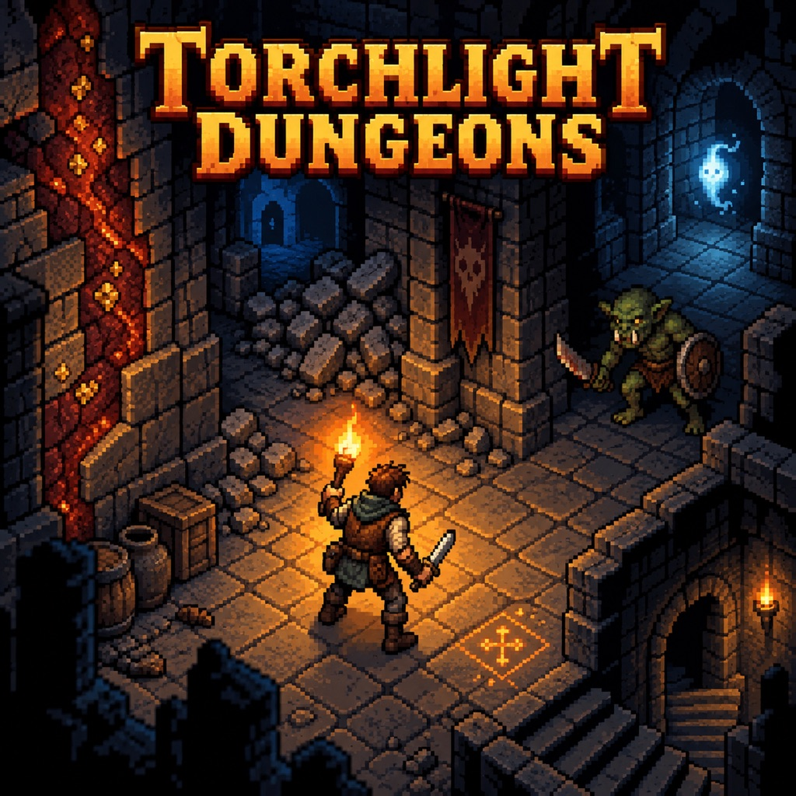
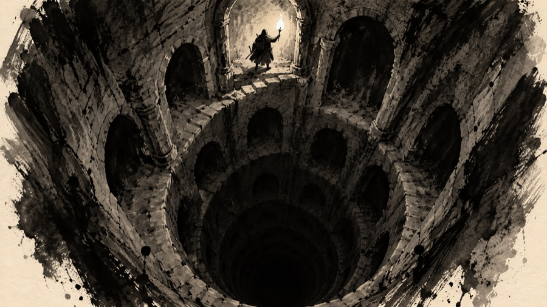

The lore of Torchlight

Welcome to the world behind Torchlight Dungeons: its beginning, its history, the peoples and callings, the dungeon and how it came to be, what lives in it, and the things of power found there. Everything here is meant to be argued with, cut and rewritten. Names that already exist in the game are used as they are, so the lore can flow back into item and monster descriptions, level feelings, book titles and the help pages.
The files
| File | What it covers |
|---|---|
| Cosmology | The Gloam, the First Fire, Morrowgloom, and why there are two kinds of magic |
| Timeline | From before the Kindling to the present year, 1207 of the Hollow |
| The world | The lands above: Lanternhollow, the Hollowmark and its neighbours |
| The Lampway | How the dungeon was built, its five rings, the mines, and the legends of what is down there |
| Peoples | The eight peoples and how each is bound to the light and the deep |
| Callings | The six callings and the orders behind them |
| Rulers & heroes | The Lamp Kings, the Keepers, and the heroes of song |
| Bestiary | A repository of every monster family, the named uniques, and the Lantern-Eater |
| Magic & artifacts | The two realms, the spell books, flavours, special kinds and the six artifacts |
| Art list | A list of 151 illustrations (monsters, peoples, items, places, maps, emblems) with prompts in four styles and rules that keep them consistent |
Ground rules for the lore
- All of it is original. As with the game (see "Licence" in Contents), every name, place, creature and plot is our own. In particular, the dungeon is not a mine whose diggers went too deep and woke an ancient fire-demon. Here the dark was already down there, and the dungeon was built to hold it.
- The game is canon first. If the lore and the game disagree, the game wins until someone changes the game. Depths are given in feet, as the game shows them (one level is 50 ft).
- One theme ties it together: light is borrowed. All light in the world is carried from one first flame, and everything that lives in the dark either hungers for it, hides from it, or guards it.
- Leave room. A legend can be wrong. Where sources disagree, say so; that is what keeps a world feeling old.
Words used throughout
| Word | Meaning |
|---|---|
| Torchlight | The world's old name: "the lit world", the land the first torch was carried across. Scholars write it as one word; common folk just say "the world". |
| The Gloam | The lightless sea that was everything before the First Fire. It is not evil, only hungry. |
| The First Fire | The flame that kindled the world. Every light since, from a star to a tallow candle, is a spark carried from it. |
| Morrowgloom | The last deep pool of the Gloam, sunk beneath the world. "The Lantern-Eater." It eats light, and each light it eats is a morning that never comes. |
| The Lampway | The dungeon: a stair of lamp-rings built downward, ring under ring, to keep Morrowgloom sunk. Miners call its upper part "the Hollow"; adventurers call all of it "the Deep". |
| Lamp-ring | One level of the Lampway's design: a circuit of shrines whose lamps, lit together, hold the dark below them. |
| Glow crystal | Lamplight that has burned so long in one place it has set into stone. The reason anyone mined the Lampway at all. |
| Keeper | A priest of the Order of the Lamp, sworn to keep the rings lit. Today's Lampwardens descend from them. |
| YH | Years of the Hollow, counted from the founding of Lanternhollow. Older dates are BH, before the Hollow. The present year is 1207 YH. |
Decisions
Questions the first draft left open, now settled. The other files agree with these.
- Does Morrowgloom think? No. Morrowgloom is a will that is only hunger for light: no plans, no words, no malice, and nothing to bargain with. Things that do think (fiends, the Many-Mouthed) use its hunger, but none command it. See Cosmology.
- What happens after the boss? Below 2,500 ft lies the Unlit Ring, a sixth ring the Keepers began (about 2080 BH) to close the cage from below and never finished. One great crystal, the Last Lamp, lit by the last Keepers there, holds Morrowgloom at bay; relighting the ring around it is a champion's mission. Deeper still is the Elder Ring, lit before the First Keeper by unknown hands. See The Lampway and Timeline.
- Is the Lantern of the First Keeper the very first lamp? No. Much older lamps exist, but Caedra's lantern was lit from the First Lamp, the lamp that first caught the fallen ember, made by the same unknown hands as the Elder Ring. See Cosmology and Magic & artifacts.
- How much of this should players see in the game? All of it, in five places: item and monster descriptions, level feelings, the help page, a "Lore" tab in the Journal, and books found in the dungeon. This is phase 11 in Contents.
Open questions
- Who was the First Keeper before she was a saint? What the lore says now: her name is Caedra, a human lamplighter from the coast (born about 2620 BH). Her deeds: she walked into the Breath with a lantern lit from the First Lamp (about 2580 BH), founded the Order of the Lamp with the rule "Keep it lit, and keep it down" (about 2560 BH), planned and built the Lampway with the Stonekin and Cragborn, and at the Sealing (about 2100 BH) carried her lantern down and lit every ring, and did not come back. The main entries are in Rulers & heroes ("The First Keeper") and Timeline ("The Founding"). Still open: her life before the Breath, her family, and why she went into the sinkhole at all.